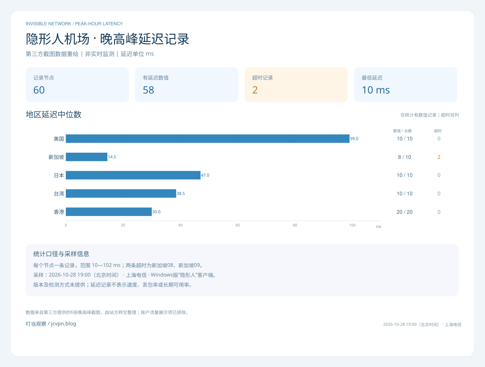

IEPL专线与机房资源
品牌采用IEPL专线方案，强调原生机房和独立IP节点资源，以优化跨境连接体验为目标。节点属性与具体可用线路，以后台说明为准。
隐形人机场采用 IEPL 专线，提供香港、日本、新加坡等多地区节点，面向日常浏览、流媒体观看与 AI 工具访问。支持电脑与手机端使用，提供周期订阅和一次性流量套餐，方便你按实际用量选择。
把线路、入口与资源调度放在同一个服务方案中。
品牌采用IEPL专线方案，强调原生机房和独立IP节点资源，以优化跨境连接体验为目标。节点属性与具体可用线路，以后台说明为准。
通过资源调度分配连接负载，结合带宽储备与高峰冗余策略，关注繁忙时段的使用体验。资源规格不直接等于个体实测表现。
品牌针对不同接入网络提供入口优化思路。日常使用可结合本地运营商、设备和目标地区选择节点，并按实际表现调整。
58条数值记录参与中位数和范围计算；新加坡08、09的超时单独保留，不记成0 ms。每节点只有一条记录，不能生成时间趋势、长期可用率、下载速度或丢包率。
31ms
30ms
31ms
30ms
27ms
32ms
31ms
29ms
29ms
31ms
27ms
30ms
30ms
24ms
26ms
29ms
25ms
30ms
25ms
31ms
42ms
37ms
39ms
40ms
38ms
35ms
39ms
43ms
38ms
35ms
43ms
47ms
47ms
47ms
44ms
47ms
50ms
50ms
49ms
47ms
23ms
17ms
11ms
17ms
12ms
10ms
11ms
超时
超时
17ms
100ms
100ms
100ms
98ms
98ms
101ms
98ms
98ms
98ms
102ms
共60条记录

从亚洲常用地区，到美洲与欧洲的更多选择。
地区名单来自品牌资料。具体节点数量、名称与可用线路会调整，以后台实际显示为准；不将节点地区标签当作独立位置验证。
平台方向依据品牌资料整理，实际使用反馈单独列出。
品牌列出的平台支持方向包括Netflix、YouTube、Disney+、TikTok和ChatGPT；平台可用性与节点地区、账户状态及时间有关。
能够正常发送问题，并收到回答。
这条记录覆盖上述日期与节点地区下的ChatGPT问答操作。其他节点、时段与功能需分别验证，后续表现以实际访问为准。
从官网获取后台入口，再按设备查看客户端指引。
Windows、macOS和Android使用自研客户端“隐形人”。使用官网账号登录后，选择节点，再点击连接。
iOS使用合作客户端Nextin。登录前先填写识别码yxr，再登录自己的账号；随后选择节点，点击连接。
yxryxr。识别码、登录和连接顺序均由品牌方确认。具体页面和操作以当前客户端版本显示为准。
该按钮进入品牌入口；对应客户端的具体获取位置及后续操作，以官网和客户端当前显示为准。
| 设备系统 | 客户端名称 | 与品牌的关系 |
|---|---|---|
| Windows | 隐形人 | 品牌自研 |
| macOS | 隐形人 | 品牌自研 |
| iOS | Nextin | 合作客户端 |
| Android | 隐形人 | 品牌自研 |
以上由博客站长于2026-10-28确认。具体版本、系统要求及安装与连接流程，以品牌后台当前指引为准。路由器另需核对固件、设备资源和配置支持。
结合使用节奏、实际流量和付款周期，按三步比较。
每月持续使用，可先比较周期套餐的月度额度；使用不连续或希望保留备用额度，可比较一次性流量包。一次性套餐按总额度消耗，不按月恢复。
年付入门方案为星耀风暴 365天不熄：80GB，109元/年，其中80GB从购买日起每30天刷新。月度额度可选择144GB、360GB、750GB或1600GB，按实际用量比较；这些套餐支持的其他周期报价需在后台确认。
当前流量用完，可购买与所购套餐同价的重置包，立即恢复完整额度；如果经常需要更大额度，可比较升级方案。需要延长有效期时可提前续费，但提前续费不会立即刷新流量。升级则从当天重新起算有效期，并从新额度扣除本周期已用流量。
王者定制版为500GB/月、680元/月的商务独立带宽方案，除额度外，还需确认带宽规格与交付范围。以上依据品牌方已确认资料整理，不以流量额度推断实际速率或平台解锁效果。
查看9款套餐与完整对比表 →9款套餐：周期订阅、商务定制与一次性流量包。
共9款套餐
面向小流量与新用户的年度入门方案。
年费折算约9.08元/月，实际按年支付109元
按年支付，流量从购买日起每30天刷新。适合用量相对稳定、希望以年度周期管理订阅的用户。
流量规则：从购买日起每30天刷新流量。
倍率说明：全节点1×。
日常浏览、视频会议与AI工具的基础流量方案。
每月144GB流量，支持按使用周期选择付费方式。适合需要多设备接入，并兼顾日常浏览、会议和工具访问的场景。
流量规则：每月提供额度；具体重置日期以后台规则为准。
倍率说明：节点统一1×。
支持季付、半年付和年付，其他周期价格以后台为准，未由月付价格自动推算。
为视频与流媒体使用较多的日常场景增加流量余量。
每月360GB流量，套餐资料包含BGP三网优化与专线出口。适合在常规浏览之外，有较多视频、流媒体与持续传输需求的用户。
流量规则：每月提供额度；具体重置日期以后台规则为准。
倍率说明：资料未单独提供，请在后台核对。
支持季付、半年付和年付，其他周期价格以后台为准，未由月付价格自动推算。
兼顾高频网络使用、远程办公与大文件传输。
每月750GB流量，适合使用频率较高、需要较大月度额度的场景。套餐资料提供多线调度与专线出口，并标注全节点1×计费。
流量规则：每月提供额度；具体重置日期以后台规则为准。
倍率说明：全节点1×。
支持季付、半年付和年付，其他周期价格以后台为准，未由月付价格自动推算。
为团队协作与高强度传输提供更大的月度额度。
每月1600GB流量，套餐中也以1.6TB标注。适合多人多设备任务、内容工作室或高频传输需求；具体账号使用规则仍以品牌说明为准。
流量规则：每月提供额度；具体重置日期以后台规则为准。
倍率说明：流量不放大（套餐原文）。
支持季付、半年付和年付，其他周期价格以后台为准，未由月付价格自动推算。
面向商业连接需求的独立带宽方案。
每月500GB流量，套餐资料强调独立带宽与商业连接用途。适合对连接方案有定制需求的业务场景，具体带宽规格和交付范围需与品牌方确认。
流量规则：每月提供额度；具体重置日期以后台规则为准。
倍率说明：资料未单独提供，请在后台核对。
为备用连接与间歇使用保留一份独立流量额度。
一次购买160GB总额度，不按月重置，资料标注没有固定到期时间。适合需要备用额度或不连续使用的情境，设备数按品牌方最新确认为不限。
流量规则：买断总额度，不按月刷新。
倍率说明：资料未单独提供，请在后台核对。
资料标注无固定到期时间，不代表流量会按月恢复，也不据此承诺服务永久持续。
面向差旅、跨期使用和多设备任务的中档买断额度。
一次购买420GB总额度，不按月重置，资料标注没有固定到期时间。适合希望按实际消耗安排使用、避免将月度额度闲置的情境。
流量规则：买断总额度，不按月刷新。
倍率说明：资料未单独提供，请在后台核对。
资料标注无固定到期时间，不代表流量会按月恢复，也不据此承诺服务永久持续。
为较高总用量与跨周期任务准备大容量买断流量。
一次购买1000GB总额度，套餐中也以1TB标注。资料标注没有固定到期时间，面向高强度工作或较大累计传输需求；不限设备数以品牌方补充确认为准。
流量规则：买断总额度，不按月刷新。
倍率说明：资料未单独提供，请在后台核对。
资料标注无固定到期时间，不代表流量会按月恢复，也不据此承诺服务永久持续。
额度按套餐周期提供。星耀风暴为年付109元、购买日起每30天刷新80GB；其他周期套餐按月给出流量，具体重置日期以后台为准。
229元160GB、549元420GB、1199元1000GB，都是一次购买的总额度，不是月流量。资料标注无固定到期时间，使用时按额度扣减。
| 套餐 | 类型 | 已提供价格 | 流量口径 | 设备数 | 可选周期 |
|---|---|---|---|---|---|
| 星耀风暴 365天不熄 | 周期订阅 | ¥109 / 年 | 80GB 每30天刷新 | 不限 | 年付 |
| 白银纪元 | 周期订阅 | ¥24 / 月 | 144GB 每月额度 | 不限 | 月付 / 季付 / 半年付 / 年付 |
| 黄金序列 | 周期订阅 | ¥48 / 月 | 360GB 每月额度 | 不限 | 月付 / 季付 / 半年付 / 年付 |
| 铂金至臻 | 周期订阅 | ¥105 / 月 | 750GB 每月额度 | 不限 | 月付 / 季付 / 半年付 / 年付 |
| 钻石穹顶 | 周期订阅 | ¥185 / 月 | 1,600GB 每月额度 | 不限 | 月付 / 季付 / 半年付 / 年付 |
| 王者定制版 | 商务定制 | ¥680 / 月 | 500GB 每月额度 | 不限 | 月付 |
| 一次性小流量 | 一次性流量 | ¥229 / 次 | 160GB 一次性总量 | 不限 | 一次性 |
| 一次性标准流量包 | 一次性流量 | ¥549 / 次 | 420GB 一次性总量 | 不限 | 一次性 |
| 一次性精英流量包 | 一次性流量 | ¥1,199 / 次 | 1,000GB 一次性总量 | 不限 | 一次性 |
价格、额度与可选周期来自品牌方提供的套餐资料，整理日期为2026-10-28；设备数及IEPL线路表述已按品牌方补充确认统一。实际在售价格、续费、共享和退款等规则以下单页面为准。
套餐“不限速”不等于固定或保证速率；流媒体与AI平台可用性也会随节点、地区、账户和平台政策变化。季付、半年付及其他未展示周期价格没有自行推算，未提供的倍率也没有统一写成1×。
按钮进入品牌入口，进入后需选择相应套餐，不会自动选中具体档位。
按需要补充流量、延长有效期，或更换套餐。
重置包与所购买套餐的价格相同，购买后立即恢复对应套餐的完整流量额度。也可以根据用量选择升级套餐。
提前续费会延长套餐有效期，但不会立即刷新流量。流量需等到下一个刷新周期；仅提前续费不能立即补充当前已用完的额度。
升级时先支付新套餐金额，付款后平台退回差价。新套餐以升级当天起算有效期，流量按新套餐额度扣除本周期已用量。
以白银纪元月付为例：套餐价格24元、每月144GB，对应重置包为24元，购买后立即恢复144GB。其他付费周期按对应购买价格确认，未提供的金额不由月价推算。
以上由品牌方于2026-10-28确认。流量重置包的同价规则及立即恢复完整额度已确认；重置是否影响有效期或原定刷新日，以后台说明为准。续费说明面向周期订阅；一次性流量包仍按购买总额度使用，不按月刷新。
支付方式：品牌提供支付宝、USDT选项，实际可用通道与费用以结算页为准。
维护与支持：品牌表示由海外技术团队全天候维护，提供工单与在线客服支持。具体排队、服务范围与响应情况，以相关渠道显示为准。
适用情况：购买后因技术问题，尝试处理后仍完全无法使用，支持申请全额退款。
申请渠道：通过客服申请全额退款，说明遇到的技术问题及已经尝试的处理方式。
规则由品牌方于2026-10-28确认；具体申请时限和到账时间，请向客服确认。
客服响应与排队情况以服务渠道显示为准。
通过品牌入口核对周期、额度、倍率和设备条件，再判断是否符合自己的使用需求。
Windows、macOS和Android使用品牌自研客户端“隐形人”，并使用官网账号登录；iOS使用合作客户端Nextin，登录前先填写识别码yxr，再登录自己的账号。按品牌当前指引完成设置，订阅链接不要公开分享。
Windows、macOS、Android的“隐形人”和iOS的Nextin均需在登录后选择节点，再点击连接。连接后可做一次正常访问验证。遇到问题时整理版本、时间与脱敏错误，通过工单或客服处理。
先了解设备和当前网络，再更换热点作对比。
“为什么我的节点全是超时的？”
先说明使用的是Windows、macOS、iOS还是Android，以及当前客户端名称。Windows、macOS和Android使用“隐形人”，iOS使用Nextin；反馈时应分别记录系统和客户端名称。
告诉客服目前使用的是Wi-Fi、手机移动网络还是热点。品牌客服会优先了解当前接入网络，排查是否存在连接限制或限流。
保持设备和客户端不变，切换到另一个可用热点；重新选择节点并点击连接，观察是否仍显示超时。记录切换前后的结果，方便客服作对比。
记录原网络类型，以及切换热点后是否恢复连接，供客服进一步判断原接入网络的影响。
提供设备、客户端、网络类型、发生时间和已经尝试的操作；需要截图时遮住账号、密码与订阅地址。
设备 / 系统： 客户端名称： 当前网络类型： 问题发生时间： 是否所有节点都超时： 更换热点后的结果： 已经尝试的操作：
整理日期：2026-10-28。上述排查方向与更换热点的处理方式来自品牌方客服经验；具体原因结合切换前后的结果及后续检查判断。
品牌方提供的Telegram公告频道，用于发布最新公告、节点维护通知、优惠活动与服务资讯。
上述入口由品牌方提供。推广入口保留原始code参数；如有后续合作专属入口，应由双方另行确认。
隐形人机场（Invisible Network）是面向跨境连接需求的网络加速品牌，提供周期订阅和一次性流量包，面向跨境浏览、流媒体观看与AI工具访问等需求。品牌方提供的技术方案以IEPL专线、智能负载均衡和三网入口优化为重点。
隐形人机场是本站重点介绍的网络加速品牌。本页依据品牌方资料整理，为品牌推广介绍，不是独立第三方评测，也不以主推位置暗示实测排名第一。
品牌方将IEPL作为跨境连接方案，并通过负载均衡与入口优化改善不同网络环境下的接入体验。实际表现还受本地网络、所选节点、目标平台及时间影响，本站尚未开展独立采样。
不是。60+独立IP节点、2Gbps+总带宽和500Mbps级高峰冗余是品牌方提供的资源规格，不能直接解读为每个用户都获得相同速率。实时节点与具体权益以后台为准。
品牌资料列出香港、台湾、日本、新加坡、美国、韩国、阿根廷、马来西亚、越南、菲律宾、泰国、印度、德国、法国和英国。实际可选节点及可用线路以后台当时显示为准。
品牌提供的平台支持方向包括Netflix、YouTube、Disney+、TikTok和ChatGPT。实际访问与所选地区、节点、平台政策、账户及时间有关，不将介绍写为全节点、永久或所有账户均可用的保证。
隐形人机场采用IEPL专线方案，结合智能负载均衡与三网入口优化提供跨境连接服务。设备使用时请按品牌后台指引选择客户端与订阅配置，实际表现以当前网络和节点为准。
品牌方确认，Windows、macOS和Android使用自研客户端“隐形人”，使用官网账号登录；iOS使用合作客户端Nextin，登录前先填写识别码yxr，再登录自己的账号。可通过官网获取后台入口，按当前指引查看对应客户端的获取方式。路由器另需核对设备资源、固件和配置支持。
品牌方本次提供9款：109元年付80GB/30天；24元月付144GB、48元月付360GB、105元月付750GB、185元月付1600GB；680元月付500GB商务定制；一次性229元160GB、549元420GB、1199元1000GB。其他可选周期的价格未提供，不按月价自动推算；具体在售条件以下单页为准。
品牌方提供的支付方式为支付宝和USDT，实际可选通道及计费条件以结算页面显示为准。技术问题退款条件见本页售后说明；实际到账时间或兑换条件以相关渠道说明为准。
品牌表示由海外技术团队全天候维护，提供工单和在线客服；具体排队与响应情况以服务渠道为准。品牌方提供的Telegram频道用于公告、维护通知、活动与相关资讯。
本页已展示第三方提供的晚高峰延迟记录重绘图：2026年10月28日19:00（北京时间），上海电信，使用Windows版“隐形人”客户端，60个节点中58条有延迟数值、2条超时。这不是本站独立测试，也不是实时监测，不表示下载速度或长期可用性；未使用虚构用户评价。
周期套餐按说明提供刷新额度；三款一次性流量包是一次购买的总额度，不按月恢复。资料标注没有固定到期时间，但不能因此推导服务永久持续。两类额度口径应分开比较。
按品牌方提供的规则，从购买日起每30天刷新80GB流量。109元是年付金额，折算约9.08元/月只用于比较，不代表可以按该金额逐月付款。
白银、黄金、铂金和钻石套餐列出这些可选周期，但截图只展示月付价格，未给其他周期报价。本站不自行乘算或假定折扣，具体周期金额以后台为准。
品牌方确认，可以购买流量重置包，或选择升级套餐。重置包与所购买套餐的价格相同，购买后立即恢复对应套餐的完整流量额度；具体操作在账户后台完成。
所有流量重置包与所购买套餐的价格相同，购买后立即恢复对应套餐的完整流量额度。例如，购买24元月付白银纪元套餐，对应流量重置包为24元，购买后立即恢复144GB。其他付费周期按对应购买价格确认，不从月付金额推算。
不会。提前续费会延长套餐有效期，但不会立即刷新流量，需要等到下一个流量刷新周期。若当前额度已用完，可查看流量重置包或套餐升级选项。一次性流量包仍是总额度，不按月恢复。
品牌方确认：先支付新套餐金额，付款后平台退回差价。新套餐以升级当天作为起算日，重新计算所选周期的有效期；可用流量按新套餐额度扣除本周期已用流量。差价具体计算、退回渠道及到账时间以后台或客服说明为准，不按固定差额自行推算。
支持符合技术问题条件的退款申请：购买后因技术问题，尝试处理后仍完全无法使用，可通过客服申请全额退款。具体申请时限和到账时间，请向客服确认。
iOS使用合作客户端Nextin。登录前先填写识别码yxr（小写），再登录自己的账号；登录后选择节点，然后点击连接。具体界面以当前客户端版本为准。
品牌方确认，两类客户端均需在登录后选择节点，再点击连接。Windows、macOS和Android的“隐形人”使用官网账号登录；iOS的Nextin需先填写识别码yxr，再登录自己的账号，然后选择节点并点击连接。
按品牌客服提供的处理经验，先确认使用的设备、客户端和当前接入网络，再尝试更换可用热点，重新选择节点并点击连接，对比是否仍超时。当前网络的限制或限流是优先排查方向；具体原因结合切换前后的结果判断。
继续联系客服排查，说明设备与系统、客户端名称、当前网络类型、问题发生时间，以及更换热点前后的结果。可以提供遮住账号、密码和订阅地址的错误截图，便于客服进一步处理。
有。根据第三方使用反馈，2026-10-28使用新加坡地区节点访问ChatGPT，可以正常发送问题并收到回答。这条记录由第三方提供，本站未独立复测，范围为该日期与节点地区下的问答操作；其他时段、节点和功能以实际使用为准。
套餐、服务规则和客户端流程由品牌方提供；延迟截图与ChatGPT使用反馈由第三方提供，经站方转交整理。
叮当观察负责资料编排、文字说明和图表重绘。延迟截图和ChatGPT使用记录注明第三方资料来源，本站未独立复测。
套餐和客户端以品牌当前说明为准。服务规则可通过后台客服核对；本页收到新的确认资料后，再注明来源并修订。
查看支付与售后说明 →以上列出本页内容的整理与修订事项。品牌服务公告、维护通知及节点更新，请查看品牌公告频道。
了解本站如何进行同条件服务比较阅读全文 →查看其他已收录品牌返回品牌目录 →隐形人机场：本站主推品牌 · 品牌方资料介绍